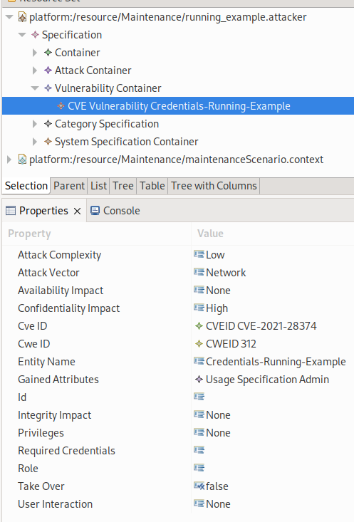
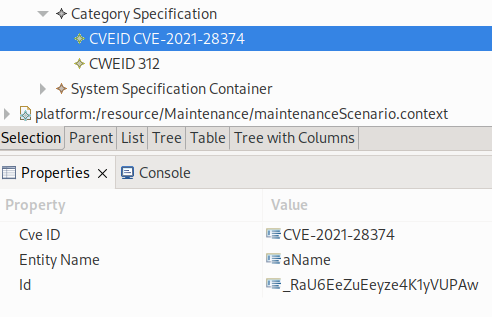
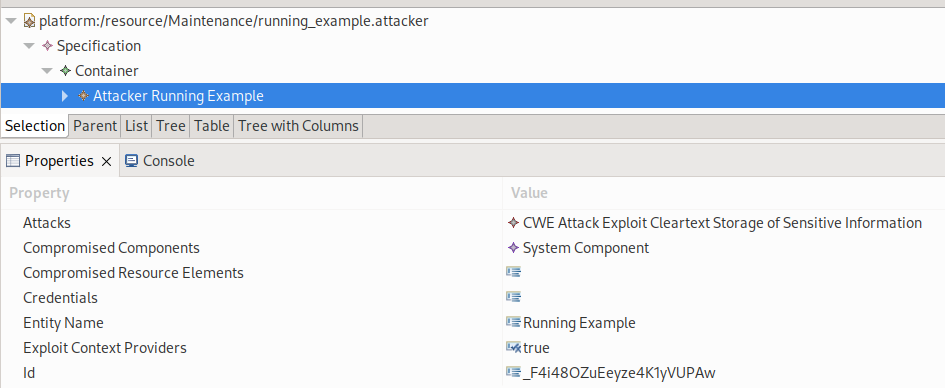

Modeling Attackers & Vulnerabilities
The attackers and vulnerabilities are modelled in the attack model. It contains the attacker, the attack specification, the vulnerability specification, the attack category specification and the integration into PCM.
Vulnerability Container
In the vulnerability container the actual vulnerabilities are specified. We differ between CVE Vulnerability and CWE Vulnerability. The first one is based on the CVE concept and symbolize concrete vulnerabilities. For example, the vulnerability CVE-2021-28374 in the Maintenance Scenario (Running Example) is a concrete vulnerability.
The second type is based on on CWEs and symbolize general vulnerabilities or weakness of the sofware. For example the storage of passwords as clear text is a general vulnerability. In CWE this is CWE 312
{kind=link}
The screenshot shows an exemplary CVE Vulnerability from the Maintenance Scenario (Running Example). The CVE Vulnerability and CWE Vulnerability share most of the properties only the CVE ID is exclusive to a CVE Vulnerability. Most of these properties are based on the CVSS specification. A detailed description of most properties can be read in our paper [WHR22]. We will shortly describe the common properties without CVEs and CWEs:
Attack Complexity: Describes how complex an attack is. Possible values are LOW and HIGH
Attack Vector: The location from which the vulnerability is exploitable. Possible values are Network, Adjacent Network (is interpreted as Network in the analysis), Local
Availability Impact: Impact on the availability. Possible values are High, Low, and NONE
Confidentiality Impact: Impact on the confidentiality. Possible values are High, Low, and NONE.
Entity Name: Name of the vulnerability as String value
Gained Attributes: Attributes an attacker can gain by exploiting the vulnerability. It uses UsageSpecifications specified in the context
Integrity Impact: Impact on integrity. Possible values are High, Low, and NONE
Privileges: Required privilege level for vulnerabilities. Possible values are Special, Low, and NONE
Required Credentials: special credentials needed for exploitation (currently not supported in the analysis).
Role: Required roles for exploitation. For instance, a client is only vulnerable to a malicious server. This would be modelled by a role with server.
Take Over: Through the exploitation of the vulnerability, attackers can gain full control of the architectural element
User Interaction: Currently not supported in attacker analysis
Category Specification
In the Category Specification software architects can model CVEIDs and CWEIDs. These are used to represent CVE elements and CWE classes.
{kind=link}
The screenshot shows the specified categories for the Maintenance Scenario (Running Example).
PCM Integration
The PCM integration is done by referencing the PCM elements. This referencing is stored in the System Specification Container. This is done by system integration elements, which reference PCM elements. The general idea is, that these elements are mapping elements between the extension model elements and the classical PCM elements.
Vulnerbility System Integration: Reference between a vulnerability and a PCM element.
Role System Integration: Reference between a Role and a PCM element
Non Global Communication: Indicates a component can’t communicate globally, but only with its direct connected elements
The other elements are not relevant for the attack propagation analysis.
Attack Propagation Specific Modelling
Attacker Specification
The attacker is specified in the Container element of the Specification.
{kind=link}
In the properties section, the attacker properties can be specified. In the Attacks section the attacks of the attacker can be selected. The start position of the propagation is defined by the Compromised Components or Compromised Resource Elements. These can be created as children of the attacker. Children can be added by a right click on the element.
In the Credentials section the initial credentials can be selected. Credentials are the attributes of the access control system. In our case these are UsageSpecifications. These are modelled in the context model. The attacker can also have optionally a name, stored in Entity Name. Exploit Context Providers is always true. This is for a potential extension later on. Additionally, every attacker has a unique ID.
Attack Specification
In the attack container the attacks are specified. These are later referenced in the attacker. This allows to create a repository of potential attacks, which are then selected in the attacker. All attacks consist of a Category, Entity Name, and ID. Based on the Category we differ between two types of attacks. The CWE Attack and the CVE Attack. This is based on the same concepts as for the vulnerability modelling.
The first one is based on CWEs and symbolize general attacks. For instance, in the Maintenance Scenario (Running Example), we use the CWE 312. This enables attacker to exploit all vulnerabilities with the corresponding CWE class. Since CWEs are hierarchically organized, also all child elements are affected.
The other type of attack is the CVE Attack. It is based on the CVE concept and symbolize concrete attacks. The main difference to the CWE Attacks are that this attack can only exploit the corresponding CVE. A CWE attack could exploit all CVEs belonging to its CWE including its children CWEs.
Targeted Attack Graph Analyzis
Attacker Specification
In contrast to attacker from the attack propagation, we assign in the targeted attack graph analyzis only filter criteria to restrict the search space. In addition, we assign a target component. Currently we support five filter operation
MaximumPath Filter: This filter restricts the length of attack paths found. It proves useful when software architects are interested in shorter attack paths as they may be simpler to analyze than longer ones.
Credential Filter: In certain cases, it is beneficial to limit the initial usage of specific credentials. This filter governs the use of credentials as initial access points. For example, credentials like domain admin credentials may grant access to numerous architectural elements. To exclude them from the initial selection, software architects can apply this filter. However, even though the analysis cannot consider them as the starting point for an attack path, they can still be reached through vulnerabilities in an attack path.
StartElement Filter: This filter is used to select specific architectural elements as starting points for attack paths. While the usual analysis considers attack paths for every architectural element to the target, this filter allows architects to focus on attack paths starting from specific elements of interest. For example, they may want to identify attack paths from the externally accessible Terminal to components containing confidential data.
Impact Filter: This filter allows architects to filter out vulnerabilities based on a specific impact. It enables them to focus on attack paths that affect specific aspects of the system’s security, such as confidentiality.
Exploit Filter: This filter is responsible for filtering attacks based on the attackVector, attackComplexity, and UserInteraction attributes. It enables architects to identify attack paths that contain vulnerabilities that are easily exploitable. It is particularly useful for considering different attacker types.
For more detailed descriptions of these properties, refer to [WH23].